Summary
This lecture segment explains how waves superimpose and how forward- and backward-traveling waves can form standing waves under the right conditions. It distinguishes reflection at fixed ends, where a pulse inverts due to Newton’s third law, from reflection at free ends, where the pulse does not invert because there is no vertical reaction force. Standing waves on strings arise from reflection and interference, with nodes, antinodes, harmonics, and boundary conditions determining which wavelengths are allowed. For a string fixed at both ends, the length must equal an integer multiple of half a wavelength, giving and . The lecture connects these allowed wavelengths to frequencies and wave speed, including the string wave speed relation . It also gives resonance examples, including standing waves on a bridge and why soldiers should avoid marching in step across bridges.
Knowledge tree
- Superposition of Traveling Pulses (Page 11)
- Standing Waves from Forward and Backward Traveling Waves (Page 11, Page 12)
- Reflection at Fixed Ends (Page 11)
- Reflection at Free Ends (Page 11)
- Standing Wave Trigonometric Form (Page 11)
- Nodes and Antinodes (Page 11)
- Boundary Conditions for Strings Fixed at Both Ends (Page 12)
- Allowed Wavelengths and Frequencies of String Modes (Page 12)
- Resonance and Harmonics on a String (Page 11, Page 12)
- Bridge Resonance Example (Page 12)
- Wave Equation, Wave Speed, and Superposition Summary (Page 12)
Source material
Page 1
Plus, you can search for your student number and then you’ll see at the top part room you should be in. Please do that.
I’ll remind you on Wednesday again. The test is optional. So you can… That’s not me. That’s not my stomach. The test is optional.
So there’s two parts in the whole course. Part one is on modules one and two. So the semiconductor part and the mechanics part. And you can choose to make that. If you score well for this midterm test. So you will get a grade S1 midterm. Score for part one midterm. Maximum 40 points. If you score well, the four points. 40 points in the exam. If you score well, you don’t have to take that part in the final test.
So say if you score 32 out of 40 points. Let’s do an example. 32 out of 40. So basically that’s an 8. Then in the final test, you would still have to get to a total of 55 points. So you need 23 points more in the final test to get to 5.5. Right? The advantage, if you score well, is that you can take 3 hours in the final test to score those 23 points out of 60 points in the final test on part two.
If you do really well on the midterm, you score 40 out of 40 points. You still only have to score 15 points to pass the course. Right? It does pay off to, well, at least try.
The good thing is, the best of the two grades counts. So part one is also in the final test. If you screw up part one here, or if you are not completely happy, I would suggest start with part two in the final test and then see whatever you can make from part one in the final test to improve your grade. The max of the two counts and there will be one grade registered for the course only.
So there’s no do I need to get a 5 or higher to pass the course? No. You need 55 points out of 100 points to pass the course. And you can do in whatever way using this formula to score these points. Is this completely clear?
So this is a different setup than the optional test in EC1. This is really if you score well on the midterm, you don’t have to do that part in the final test. Last year there were quite a few who did not take that part in the final test. So they benefited really from this midterm arrangement. If you’re not sure yet if you’ll pass the course, well the midterm is also a nice way to see where you’re at.
Right, so these I hope this is clear. Questions? No? Okay.
Let me do a quick quiz question and then I’ll get back to the movie on the Tacoma Bridge I promised. I didn’t end up showing that last Thursday. But let’s first have a look at this question. This was an exam question in the practice test which is really an exam level question. So you should treat these kind of as a puzzle. I realize I’m going through this quite quickly but I also have to cover the material of this lecture.
Let’s do voting already and see then how to solve this correctly.
Who would go for answer A? Answer B? Answer C? Another few. Answer D? E? F? And G? Well there is a correct answer here. I’m not even sure. I think it’s E. Let me show you how it’s done.
If you hang a mass on a spring, you’re extended by a distance delta L so the spring concept can be derived from the force mg over the length that the mass is hanging more down. So mg over delta L.
If you then want to calculate the frequency so that’s one over two pi times omega so that’s one over two pi squared K over M and if you then fill in K you will get one over two pi mg over delta L over M so you would find one over two pi squared G over delta L. So indeed, answer E is correct. And this formula you don’t have to know by heart it’s on your formula sheet but you will have to apply that to a puzzle, I would call it.
Is the approach clear? Yeah, question? Oh it should be A, sorry. Yeah, it should be A. So my bad. Yeah, it should be answer A. Not answer E. One over two pi is essential. So there were still a few who had this correct. Yeah, my bad. Sorry, answer A. Yeah, if both answers are there you, well the factor does matter. So that’s A should be correct.
Let’s as a brief recap of what we did last time and I’ll show a few movies still on that. We looked at oscillations undamped, damped forced oscillations some simple harmonic motion with two very characteristic systems:
- a mass-spring system with omega being square root of k over m
- the pendulum with the demos, you recall that with the omega being square root of g over l
And then we looked at resonance so I’ll show a nice example here a very, very old-fashioned movie but that’s part of the fun. You see a bridge being excited by the wind. Yeah, they’re running away in panic. He chose wisely.
So what happened
Page 2
here is that the wind was exactly at the frequency that could excite the bridge into resonance and if the system is at resonance you need only a very small excitation to induce a very large motion of the system that you, well, excite and if this swings up this was a torsional mode of the bridge and due to that it collapsed.
There’s more examples so a nice destructive one is this one as well let me see, old ground resonance here on this one where there’s a helicopter tethered to the ground but it’s a combination of the rotor speed and the springs by which it’s suspended gives it a resonance. It makes a mass spring system that’s excited into well, it crashed that was a very expensive error.
And the last one this is a system that is excited horizontally horizontally well, it’s excited horizontally and there’s three mass spring systems on this plate basically these are long springs so they have a low stiffness. Low stiffness means a low natural frequency at 4 Hz there’s a small excitation here and a large excitation there where the system is brought into resonance and then the frequency is swept up so I’ll speed up a bit at the next frequency the second mass is resonating.
So this is at a higher frequency, higher spring constant it looks like it’s the same mass 6.35 Hz there’s a resonance of this system and if you increase it even further it should be around here I think this one is at 11 Hz the other two do nothing and this system now starts well, resonating there’s the natural frequency probably here now so that’s the third natural frequency though the system the systems really act like a one mass spring system but you have three in a row and so they resonate at a different frequency each.
So that is to conclude oh there’s one more this one if there’s wind excitation on skyscrapers, well they are built to be flexible in a certain sense so they should be able to swing in the wind but if this happens at the correct frequency they also swing quite a lot people might get seasick in the top floors so much for resonance this is the forced excitation of a system that has a natural frequency. If you’re excited at the natural frequency it’s really easy to induce large responses with small inputs.
Okay, today we’re going to talk about mechanical waves so as I said this is a difficult concept to grasp but I hope to ease you through that today and well we all know what waves are so there’s waves in the ocean this is a seven minute video, I’m not going to show that you know what waves look like this is a nice one do-it-yourself example in a pool where there’s a spherical or a cylindrical wave if you excite the water at the correct frequency you can make a lot of fun for the kids so this is a 2D example of a wave let’s see there a stadium wave, that’s something you know and already here you can see one of the important properties of a wave are the people moving sideways no right, they are just raising their hands so the wave is propagating in one direction and the movement is in a different direction so this is what’s called a transverse wave I’ll come back to that in a second well you know how this works and see there’s another one oh yeah, last one also a very old fashioned movie nuclear blast.
So this is a recording of a nuclear blast where a bit later in the movie there’s a view from a satellite where you see waves really propagating over the earth’s surface that should be now so you really see waves propagating spreading outward from the blast and then a second shock wave and this wave really propagates over the earth’s crust.
So a wave if you look at the examples is a disturbance or a motion that moves over time so this can be a displacement an oscillation on a water height but it can also be pressure or sound that propagates so sound waves, those are pressure waves propagating through air and the propagation is what makes it difficult to describe this because it’s both in space and time that it propagates but we’ll get back to that these also transport energy so sound, if I’m talking to you now and this sound is propagating to you and this is also energy I’m sending out the nuclear blast, that’s also energy that’s being sent out.
Waves on a string, that’s an example you’ve probably seen before there’s a piston in a cylinder with fluids where the piston oscillates and then the particles in the fluid will oscillate in the same direction as the piston is moving there’s a wave tank in which you move one wall and by doing that you’re pushing against the water and then the waves will be a combination of a forward travelling wave and a transverse wave so the particles will move in a circular motion all of these are
Page 3
waves we’ll stick to simple ones, waves on a string in this course because that’s difficult enough already other examples are blood flow through the human body you can measure in the aorta or the belly inside the the veins what the pressure is and you see that in the aorta there’s a different pressure profile than in the in the vein that’s going to the belly in the ultrasound you can do similar things you can look at the cross section of an artery the red one, blue one, green one, yellow one where you will see different pressure profiles also as a function of time you see the pressure profile has kind of shifted over time so this means there’s propagation taking place and this could be used as a diagnostic application if there’s calcification of the arteries and then the wave propagation will be different compared to a healthy artery.
But the bottom line here is that we have waves that relate to a displacement direction relative to a propagation direction so the stadium wave is a different type of wave than a sound wave and we can define these into two categories:
- there’s a transverse wave like the stadium wave with people just raising their hands the propagation direction is perpendicular to the direction of motion so the wave propagates around the stadium but people are just raising their hands so that’s perpendicular to the propagation direction
- and there’s also longitudinal waves in which the direction of this placement is parallel to the propagation direction so that would be this example for instance the wave is excited in horizontal direction also the propagation direction is in the same direction so this is parallel this is a parallel for a longitudinal wave and this is transverse motion so a transverse wave
I gave some examples already so a wave on water they can be both waves on a string are typically a transverse wave the wave in the stadium is also transverse wave so the figures are not moving horizontally they’re just moving up and down but the propagation is horizontal and this is what wave a longitudinal wave looks like so the oscillation or the pulse is in horizontal direction propagation is also in horizontal direction you see the main difference between the two.
Two other examples transverse waves on a string so you give a wave pulse and the pulse propagates every particle moves only up and down but due to the fact that they do this in sequence the wave is propagating and this is really a sound pressure wave for instance in which there’s a longitudinal wave with the oscillation in the direction of right? if you look at the slides in Adobe Acrobat you should be able to see these animations that’s the only viewer in which this works these are embedded GIFs or GIFs people may use themselves.
Well the last movie before the break let me see transverse so if you have a spring, a long spring you can induce both types of waves okay let me loop it so there’s local locally the windings are denser or less dense and this is in the same direction of propagation well it is in the same direction as the direction of propagation so this is a longitudinal wave and at the top that’s a transverse wave because the oscillation is perpendicular to the wave propagation direction.
So how do we describe this mathematically that’s what it’s all about we have to formulate this in some way to be able to do calculation on this so let’s consider two functions two pulses as a function of space there’s a black one and there’s a red one and if we call the black one y1 of x and if we assume that y2 has the same shape but is shifted then we should be able to describe y2 in terms of y1 right? you know how this works? someone has an idea how we can relate y2 to y1 indeed, yes y2 is y1 and then as the argument we don’t have x but x minus a exactly like this and there’s a minus sign well that’s always confusing but if you understand the trick you will never forget, hopefully if there’s a minus sign here it’s a shift in plus direction you can always check this if I fill in zero for y1 I would be at the top if I would fill in a for y2 I should also be at the top so I should get the argument zero so if I fill in a I get y1 zero which would also be at the top so that’s always a sanity check to see if you’ve shifted in the correct direction.
Okay, but this is just as a function of space let’s include the factor time as well we have the same pulse but we will now look at two different moments in time two that same pulse so this pulse shape y is now a function of position and time some initial time t0 that we can choose let’s choose it like this we take a snapshot of the pulse at this moment and if we then shift the pulse if there’s no damping or no change in the pulse then if we shift the pulse over time it will have moved to the red one here.
Page 4
So it has shifted delta t. So delta t later, the snapshot looks like the red one, okay.
How much has it shifted? Well, a distance delta x, because this is a snapshot in time, but the horizontal axis is the x axis. And this shift can be a shift in time, related to a different snapshot at a different time, but can also be a shift in position. And for that I need the velocity.
So the shift, how much has it shifted in space, is the velocity times the time duration between the snapshots, right? So if I want to describe this function, well I can write this as t0 + delta t. That would be the new y. It should have been a red one, actually.
I can describe it as a shift in time, so a new time, or as a shift in space with a shift in positive direction v times delta t. It is the same as what I did in the previous slide. This is really the same as what I did here: x - a. I’m doing that here as well, x - a, where a is now v delta t. That could also be a shift in space.
Okay, this would hold for an arbitrary time. It doesn’t matter where I take the snapshot, so it’s not dependent on the initial time I take the snapshot. So I can take that variable out. It should depend on the time difference only. It should not depend on the absolute time at which I start, it should only depend on the time difference. So t0 is not something that matters.
So what I then get-I should actually use the mouse because I’m recording-what I would get is actually a general description of a wave propagating with a speed v. So that’s this part of the wave, x - v delta t, that describes a wave propagating to the right, because it relates x and the wave velocity and time.
So that’s one of the key concepts we need throughout today’s lecture. A wave that depends on both space and time can be written as a general function f. We will look at what f is later, but the argument of the function has the x - vt as well, the important factor that describes that the wave is travelling to the right.
Okay, a wave travelling to the left would be a plus sign. Similarly as if I would have shifted the pulse to the negative x direction, I would have x + a. For this case I would have x + vt; that would be a wave travelling to the left.
So these are the two building blocks. If I would describe an equation for a wave on a string, then I could find two solutions: one forward travelling solution, one travelling to the right, and one backward or to the left travelling solution.
Is that concept clear? You can always check where the wave is going if you look at the argument. So if you have f of x + vt, where is this wave going? Well, you say:
x + vt = c
and then:
x = c - vt
And then if this constant-if I look at a maximum-where is the maximum? Then the maximum will be at, well, over time it will move to the left. x will decrease. So the maximum will be here; the wave will be travelling to the left.
So to find the maximum, I choose a certain constant. Then I might have the maximum of the pulse, and if I then look at where this maximum is going as a function of time, I can see that it is going in a negative x direction. That’s always a sanity check if you forget if the minus sign or plus sign relates to travelling to the right or to the left.
So some example given here: for instance, if you oscillate this end of the string with a certain frequency or a certain period of time, you will induce waves travelling to the right on this string. And you can imagine that the oscillation I get in the string relates to the time at which I wiggle up the one end of the string.
So if I prescribe this here as:
y(t) = 2 pi f t
or:
2 pi / T times t
then I’m oscillating one end at a fixed frequency or a fixed period of time. Then this is, well, I can write both versions. This is the description of the y coordinate of that point.
As a result, I will get a wave that propagates with a certain speed and will have certain properties. So in this wave, there’s the distance between two maxima. That’s called the wavelength, so the distance over which the wave repeats itself. And that then relates to the period time as well.
So the wave velocity, if it travels one wavelength over one period, that’s the wave velocity. You can also write that as the wavelength times the frequency, because the frequency is 1 over T.
So this is an important property of a wave. It has a certain wavelength, the period over which it repeats itself, the spatial period over which it repeats itself.
Well, I know that I have a wave travelling to the right, so I should find some equation that has this as an argument: y that has an argument x - vt. Let’s see how to fill it in.
Would this work? Who thinks yes? Who thinks no?
What kind of works, right? What do we know about the argument of a function? What dimension should that have? No
Page 5
dimension, yeah. It has dimension meters at the moment, so that’s a bit inconvenient, right?
So it’s almost correct, but not quite. It doesn’t have a correct argument. What we need actually is some scaling factor with a unit of 1 over meter that we multiply with this argument. And then we can get a description for this wave.
And this is called the wave number, which has a dimension 1 over meter, to make this argument dimensionless. And we’ll get back to what that means in the next slides.
Yeah, there’s many equivalent descriptions for a wave. We will look at a few of them, but I hope that the main point has come across now. We need something that has an argument x - vt for a wave travelling to the right, but we have to scale that in such a way that we will really describe the wave motion. That’s from a physics point of view.
From a mathematics point of view, we need a dimensionless argument for the cosine.
So let’s look at some equivalent descriptions. If we start from this, then we know that this wave was excited at a period T, and this period relates to frequency and also relates to a wave speed. So all of these parameters should be interrelated. Let’s look at how that works.
If we look at a fixed time, which we can choose 0-so let’s be easy on ourselves, choose t as 0-then we just have:
cosine kx
This argument repeats itself every multiple of 2 pi. So if:
k delta x = 2 pi
then delta x is a period over which the wave repeats itself. So the wavelength is then:
lambda = 2 pi / k
and wavelength is in meters. k is then in 1 per meter. So also dimension-wise this makes sense.
So I get:
k = 2 pi / lambda
is the wave number. So that’s the spatial repetition of the wave.
If we do it the other way around, let’s fix position x, let’s choose that 0 also for convenience, and then we have -kvt as an argument. If this -kvt is also a multiple of 2 pi, then the wave will also repeat itself every 2 pi; the cosine repeats itself.
So:
k times v times delta t = 2 pi
and this delta t, the time over which the wave repeats itself, should be the period time. So:
delta t = T
which can be written as:
2 pi / kv
We know k already:
2 pi / lambda
So we have many different ways of writing this. We can also write:
2 pi / T = k times v
So that follows from this equation. And this is then also the angular frequency.
So all of these variables are interrelated. You can rewrite one into the other, and all of these will result in valid descriptions of the wave motion. So k, T, v, lambda, f as well, omega: all of these are interrelated once you know that you have this description for the wave.
And this will take some time to get used to. This is not something that you see me do here and then you understand. You will have to really try to apply this also to problems.
So you can describe waves in many different forms. You can have this description that we’ve seen before:
a cosine k and then x minus vt
If you have the wave number and the wave speed, you can also-this is a form that’s really seen a lot in literature-multiply out the brackets and then you have k times v, which is the same as omega. So you have:
kx - omega t
if you have the wave number and the angular frequency.
For omega, you could also substitute 2 pi f, and then you also have a variable on the equivalent description. If you have a wave speed and frequency, you can also do it like this, because you can relate k to the wave speed.
All of these are equivalent descriptions of the wave. And there’s a third form in terms of wavelength and period, and there’s intermediate forms even. So the one I just said:
kx - ...
Okay, let me write that down. You can do:
y(x, t) = a cosine(kx - 2 pi f t)
That’s also a valid one, because you can relate omega to the frequency of the wave.
So there’s many forms in between. All of them are equivalent, and it depends on what is given in a problem which of these you need.
Okay, this was a lot to grasp. There’s a question. It’s an equation with two variables. Yes, it’s a partial derivative. Yeah, I’ll get back to that also later today, but not before the break.
So it’s a function of two variables, so we need partial derivatives if we want to calculate time derivatives or spatial derivatives.
So try to summarize this for yourselves, and then we’ll do quick two quizzes actually before the break. Yeah, I need to do two quizzes to be on track. Yeah, please summarize what wave motion is and how to describe that mathematically.
Yeah, so let’s do two quiz questions before the break. Three actually. Let’s see if you understand the concept. These are conceptual only, so we don’t have to do derivations yet.
Let’s assume we have a snapshot of a wave, and the wave moves to the right. What is the velocity of the particle here on this point? In what direction? So what is the velocity of this point?
Who thinks it’s answer A?
Page 6
Answer B? Answer C? Answer D? And answer E?
Okay, answer C is correct. We are at a local maximum. If we depict the wave an infinitesimal amount to the right, so this bulge will have shifted a bit to left, and then the vertical velocity, which is the only direction in which a particle here would move-it’s a wave on a string, so the particle only moves vertically-but at this point, well, it doesn’t move vertically. It has a zero velocity. The particle is in between moving upward and downward, so it has a zero vertical velocity.
Right, what about acceleration? Acceleration of this same particle.
Who thinks it accelerates upwards? Who thinks downwards? Answer B: particle doesn’t accelerate. And it cannot be determined, answer D.
Okay, well, you were set up in the correct way. Answer B is indeed correct. It is going down, because if the wave moves to the right and the particle is moving down because, well, this part comes and this part, this part, this part, so it has to accelerate down.
If we would look at a wave propagating to the right, then locally every point on the string has a certain velocity and acceleration. This is only a vertical direction because the particles only move in y direction. So there are only velocities and accelerations in vertical direction.
And we’ve seen this one: velocity was zero, acceleration is downward. But also if you are in a zero crossing, then there is no acceleration. But if you shift the wave to the right, then there will be a velocity in vertical direction. So that’s the concept here.
I will leave this one on for the break, and after the break we will answer this question. So let’s start again at quarter two. See you in 13 minutes.
Welcome back. Let’s see what you can make of this one. Sorry about the noise. Have you given this one a thought during the break? I hope you have. I am going to vote.
Who thinks it is answer A? Answer B? Answer C? Just a few more C. Not sure what is going on. Connection, it’s annoying, sorry for that. Okay, I will not touch it anymore.
Answer B is indeed correct. You can think of this as follows: if you depict this blue curve, shift it ever so slightly to the right because the wave is propagating to the right, then 0.6 will have moved slightly upwards, 0.2 will have moved slightly upwards, 0.4 is in a local minimum, so it will not move vertically anyway, 0.5 is moving down, 0.3 is moving down, 0.1 is on a local maximum as well, so it’s not moving at all.
Basically this is really annoying.
So let’s look at how we can describe this mathematically, because that’s what we are-well, we need mathematics as tools to describe this. And this is where the difficulty starts. This is new, I guess, for all of you. We have to describe this both in space and time, so we need a description that allows for that, and that’s called the wave equation.
So we’ve established that we need general forms for waves travelling to the right and waves travelling to the left. So that’s the argument x - vt and x + vt. So in general that looks like this.
Such functions satisfy the wave equation, which is a scary-looking thing here which has-okay, let me do the mouse-partial derivatives of y with respect to x, second order partial derivative of y with respect to x, and the second order partial derivative of y with respect to t.
Because y depends on two variables, x and t, I can’t write straight ds. I have to write the partial derivative notation because I have to specify with respect to which I’m doing the differentiation. So here it’s with respect to x; here it’s with respect to t.
This is called a second order partial differential equation, and this specifically is the wave equation. It relates spatial derivatives to temporal or time derivatives, and there’s a wave speed as a proportionality constant: minus one over the wave speed is here.
So let’s have a look at how this works. No, doesn’t help.
Examples are acoustics, where we have the wave speed in acoustics, in sound, so that’s 330 meters per second. But a main example where you will see extensively how waves work is electromagnetics. So it’s a course next year that has, well, wave equations in 3D basically. We’ll do 1D examples only.
This is really annoying. Hopefully-no, is it on? Yeah, hopefully this is settled now. No, not really. We’ll have to do with it.
So what does this look like? Let’s try the solutions we had. But before that, we need to define what partial derivatives are.
So let’s assume we have a function given here that depends both on space and on time. Let’s do an easy one:
sine pi x and sine pi t
So in x direction it behaves like a sine function, a minus sine function. Well, it doesn’t matter exactly. The function looks like this if you take a snapshot in space and time. And it can then have two derivatives: if you take the derivative in the x direction or in the time direction. So depending on
Page 7
What derivative you take, you have a different outcome for the derivatives. So the derivative in point P depends on two directions in general, and any derivative can be written as a combination of these two.
There’s a question? It looks 3D because I’ve made a surface plot of f(x, t). This is a surface plot of the behavior in 3D. So I have two variables and then the function value is plotted as the third dimension. So that’s why you make a 2D example. The maximum I can do is a 3D one; I would need four dimensions to plot this.
So what is plotted here is the function value for any combination of x and t within this range: x from -1/2 to 1 1/2 and t from 0 to 2. So depending on where I am on the curve, I can make derivatives in the x direction or in the t direction, and then I can get different values.
So this differentiation needs to be done carefully. If I take the x derivative, I leave this term be. If I take the t derivative, I leave this term be; I don’t use that term.
So let’s do that for the description we had. The wave description:
If I take the x derivative of this one, I differentiate only with respect to x. So it’s a cosine of the argument. The argument contains x, so we get minus the sine of the argument times the correction factor that’s in front of x.
And we have no clue what is happening. I’m not sure why this is the case. This is very annoying for the recording as well.
So if I take the x derivative, I look at what’s in front of the x, which then gets in front, and I get: cosine becomes minus sine. So I get:
If I take the t derivative, I get again minus sine of the argument times minus omega, and that’s the factor in front of t. So I get:
This goes wrong on the exams a lot. People take time derivative, they differentiate everything, so they take x dot or the dx/dt. This gets messy really quickly if you don’t do it correctly. So please only differentiate with respect to either t or x if you have such a description.
We need second derivatives as well. So the second derivative of y with respect to t is differentiating this one again. So the sine becomes a cosine, and I get minus omega in front. So I get:
So it kind of looks like itself with a minus omega squared in front.
For the spatial derivative, similar: it kind of looks like itself with minus k squared in front:
If I then look at the wave equation and fill in all the derivatives I have just calculated, I need the second-order derivatives. I can substitute that into here. So:
That’s this term, so that goes here. The minus becomes a plus, and I get:
And if I then use the relation we established earlier:
I can write:
And then indeed I see that I satisfied this equation. I get minus this term plus the same term equals zero.
So I’ve confirmed that this is a solution to the wave equation. It is possible to also formally derive solutions based on such a partial differential equation, but then you need a technique that will be covered in the course that you have next quarter. So we’re not going to do that now. We have to use separation of variables to do this; we’re not doing that here.
I’m posing that this is the solution, and I’ve shown that it satisfies the wave equation. And from a mathematics point of view, we’re then done. A wave described by this most general form satisfies this wave equation. The v is the relation between x and t, which is also the relation between the partial derivatives, and this, mathematically speaking, is enough to describe the wave.
From a physics point of view, we would like to go with the cosine and these terms to work with that. But from a mathematics point of view, the work is done.
From a physics point of view, if we analyze the system and we get to something that looks like a wave equation, so anything that can be cast into this form - I’ll give an example in a few slides - anything that, if we set up the equation of motion for waves on a string, so transverse motion of a string, we will see that we get to such an equation. And that means then that the response of that system has to be wave-like. It can allow for waves propagating in such a system.
So that’s the physics point of view. There will be examples later on, namely transverse waves on a string. We’ll focus on that. That’s difficult enough already.
So try to summarize this for yourselves. This is really the key concept in this lecture.
There’s a question: this is notation for the second derivative, yes. But if you would…
Page 8
…like to have x^2 in a non-linear way, I would, okay. So if you would want to calculate the derivative with respect to x^2, then the best would be to introduce a help variable that’s called x^2 and do the differentiation with respect to that. At least then notation-wise you’re safe.
We never take derivatives with respect to x^2, basically. Normally not, no. Within this course, not no. That’s incorrect notation. This is how the notation works.
Well, if you have a function of a single variable f(x), you can calculate:
If you would calculate f''(x), you would also write it as:
That’s just how you write it. And for partial, the only thing that changes is the d symbol. It becomes a curly d, so it’s a similar notation as what you’re used to:
So let me get back to this one. Two minutes for this and then we’ll continue with the applications.
Yeah, so there’s the wave equation. We will just work with it for now. Let’s assume that it is correct, which it is. The details in deriving that: I will show one example here, but for electromagnetics there’s pages full of derivations to get to that. So let’s not do that here. Let’s assume that it is correct. The wave equation is also given in your formula sheet.
Let’s now look at an example: transverse waves on a string. So the example with a string that is flicked, and then you see a pulse propagating back and forth. There will be videos on that as well.
If we look at a part of the string, and the string is under tension, so it’s a taut string. It’s under tension force F. So the tension force is in horizontal direction F, and the string has a mass per unit length \mu, so that’s in kilograms per meter basically.
Let’s look at a small segment of string length \Delta x. Then the total mass of this segment is the mass per unit length times the length:
So that’s a mass.
We can then write Newton’s law in y direction. For this line segment, string segment, to do Newton’s law in vertical direction, we need all the forces acting in vertical direction on that string equals m times the acceleration in vertical direction:
So let’s consider this piece of string as a fixed thing that is moving up and down. If we make this small enough, we can end up with a description of the wave. So let’s assume that it is finite for now, but we will take the limit of \Delta x going to zero.
Forces in y direction are the F_{2y} here upwards and F_{1y} downwards, so those are all the forces in vertical direction. We’ve neglected gravity for now because the effect of gravity is negligible compared to if there’s a small mass, or this can be a horizontal case as well.
Acceleration in y direction we have to calculate, but the mass is the total mass of this string segment:
So this is the force balance in y direction, Newton’s second law in y direction:
Okay, let’s work with the right-hand side first. The acceleration: well, if we define this as the y direction, then the acceleration can be written as the second derivative of y with respect to t:
If this segment is small enough, let’s consider the center point here and describe the y motion of that. So that’s the second derivative of y with respect to t. That’s the acceleration.
And then the forces in the y directions: we have to relate that to the tension in the string. Actually, the force F_2 here I can decompose into F_{2y} and F, and the force F_1 here I can decompose into a horizontal component, which I know, and a vertical component. So the horizontal component I assume to be constant is string tension F.
Then I can relate:
which is kind of the steepness at this point - that’s the angle, the slope at this point - and:
is the steepness here. So that’s kind of the derivatives at the point on the left here and the point on the right, x + \Delta x.
So I can relate the derivatives at these points to the tension in the string. I need the forces here. So if I put these into here, I pre-multiply both with F, so I get a difference between the slope here and the slope here times F. That gives me the difference in forces in the left-hand side.
If I divide this term in brackets here by \Delta x, I make an approximation of the second derivative of the slope. So you can write a first derivative. Let me do that here.
No, no, no. I can write f(x). The first derivative I can write as:
So I’m approximating the derivative of a function in this way. I can approximate a second derivative in a similar way:
I’m making an approximation for the second derivative. So that’s basically what I’m doing here. If I divide the left…
Page 9
…hand side by \Delta x, I’m making an approximation to the second derivative of this function. So that’s what I’m going to do.
And I bring F to the right-hand side, and then I get something: an approximation to the second derivative with respect to x. The example here uses h, but on the slides h is \Delta x. This is a general form; probably you’ve learned h in calculus.
So I can approximate this as the second derivative with respect to x, which I then relate to the second derivative with respect to t, and there’s a proportionality constant \mu/F that relates to the geometry of the problem. So there’s the mass per unit length and the tension in the string.
And this is the wave equation. So the wave equation we had - I’ll write that here to compare - was phrased with this one on the left-hand side with a minus sign, but this looks very similar to what we had here:
So this means, from the physics point of view, by using Newton’s second law, we have derived that waves on a string can be described by a wave equation. They’re called waves on a string for a reason, and this is then the wave equation belonging to that.
So if we rephrase that to reformulate it to everything on the left-hand side, we get to the wave equation, the general wave equation. These are really similar, where the velocity then relates to the square root of F/\mu. So you see by comparing the two, you see that:
so:
which is the tension in the string divided by the mass per unit length. You can check the units. This is indeed meters per second, but I’ll leave that as an exercise for you.
Conclusion: disturbances in a string act like a wave, and this is the wave velocity. This wave velocity is the tension over the mass per unit length.
You can see this kind of: the tension resembles k/m, like the square root or the natural frequency of a system. The string is more under tension; there’s a more restoring force towards the equilibrium. If there’s more tension, it’s easier for the string to go back to its equilibrium position, because the tension makes sure of that. And the \mu is kind of the inertia of the system. So this kind of resembles k/m, like we had for any frequency describing a mass-spring system.
Some assumptions that we make are that the tension is not affected by the pulse. So the tension is constant throughout and through any vibration, which is an assumption we have to make; otherwise we can’t describe it.
And there’s no particular shape for the pulse required. This can be a sine; this can be a pulse. A block wave is not possible because you can’t make that, but anything that has a smooth shape can be described by this. Anything that will propagate along the string.
Is this reasoning clear? So this is one example of how you get to a wave equation from a physics derivation. For electromagnetics it is more complicated; that’s really for next year. Try to summarize this for yourselves as well, and then we’ll look at some examples: first power, and then examples.
So let’s continue at how energy is transported through the wave - by the wave, actually. If you want to look at energy, we have to look at the work that is done by the string.
In the string, there’s displacement in a vertical direction only, and the work done follows from the force times displacement. There’s no horizontal displacement, only vertical displacement. So the work done is by the y component of the force and the displacement is the y displacement.
So we need the y component of the force and the displacement. Well, \Delta y relates to the v_y times \Delta t:
or:
which is the definition of the y velocity.
And the power is then work per unit of time, so it’s a force times the velocity:
So power is work per unit of time. This is in joules per second or watts, and this comes from F times v.
The y component of the force relates to the tension in the string with the slope, just as I derived earlier in the equation of motion for the string. And the velocity is:
So the power then comes from the first derivative with respect to x times the first derivative with respect to t.
If we put in what we had earlier:
I use that form of the wave equation: a wave propagated to the right, kx - \omega t.
If we put that in and calculate the derivatives - we have to calculate the x derivative and the t derivative - and then we put that in together, we get this expression, which has:
And I can also rewrite that in terms of the multiple parameters in the system by using relating k and the wave velocity. For power it often makes sense
Page 10
To look at the time average, so average over one period time, and the sine squared function average over one period time equals one half. So that’s the average value. You integrate over t and divide by the period time, then you get the power upon average of half.
So the average power means this term becomes a half, and the average power then relates to just the amplitude in front times half. So the average power is then this expression, which is also in a formula sheet.
What’s important here is that the power depends on omega squared and a squared. So if I want to put more power, I can go to a higher frequency. It scales quadratic with frequency and it scales quadratic with amplitude. So higher amplitude, two times higher amplitude, gives four times higher power that I can transmit. So that’s the important aspect here.
So let’s look at an example. So this is proportional to omega squared and a squared. An example here: let’s consider an average power duck, which produces waves on the water surface if it swims. The faster it swims, the higher the amplitude of the waves will be. So there is a limit to this, because the duck only has finite power. And then, based on biology, there’s a limit of a duck: it’s 2.5 km per hour. But this relates to the power of a duck.
So there’s… I’ll come back to your question in a second. This relates to the power of the wave. If it swims faster, you have a higher frequency, or if the amplitude increases, well, there’s only a finite amount of power it can spend, and that’s limited speed. The force would not increase. So we’ve made the assumption that the tension force is constant, and for small vibrations this holds. So it does not scale with the force, only with frequency, so omega, and with the amplitude.
We’ve assumed that the tension is not influenced by the waves propagating. If that would be the case, then also the force would be a more complex relation to in the power.
And this also relates to how waves propagate. If you think of a wave propagating in 3D, they will spread from a sphere outwards. If it’s 2D, so the example of the nuclear blast, you have a 2D wave propagating over the Earth’s crust. But in general, in 3D, a wave propagates in a spherical sense. And then, if you look at the intensity, that decreases with one over the distance squared, because the area of the sphere is 4 pi r squared. If I double r, then the area increases by the effect of 4, so it goes with r squared. And the intensity is the power per unit of area, so that then scales with one over r squared. So if I’m twice as far away, the intensity is the effect of 4 lower. Okay, for a 2D case this is a factor one over r.
An important aspect for waves is that we… an important aspect in physics in general is the principle of superposition. This is very apparent if you think about waves. An example you all know is that if there are two water drops falling into a pond, then the resulting wave pattern of the two drops together follows from superimposing the patterns from each drop onto each other. So the sum of the total function describing the waves here follows from the individual contributions of each of these. Well, these are 2D examples, but this holds on 1D as well. It follows from the sum of each of the two separately. So you add the two contributions.
And if we go back to the example of waves on a string, you can have constructive and destructive interference. So superposition that sums: if you have a pulse propagated to the right and another pulse propagated to the left, if they overlap they sum. It’s just the sum of the two, and then you have a higher pulse in the middle just at that snapshot. Then the waves propagate further and you have this pulse now here, this pulse now here.
If you have two pulses with opposite amplitude, opposite displacement, then they destructively superimpose. So you have destructive interference. So at the snapshot exactly when these pulses are overlapping, the string seems silent, and then the wave propagates further.
So this is a principle you’ve seen before, hopefully, or at least you know about. That’s a good thing about physics: you often can calculate things for one solution, things for another solution, and then you have the combined solutions for free because you can always superimpose them if you have linear physics. So for electromagnetic set of holes, for waves on a string, that holds. Once you have a general form of solution, you can make any solution because of superposition.
So what does that look like? Nice animation again. So there’s the blue dashed line and the red dashed line describing the two individual wave contributions. Well, the red one is actually this one and the blue one is actually this one, but it’s zero here, and you see that once they overlap…
Page 11
…they superimpose. So the sum of the two pulses then is this large peak in the middle. And it’s nice that you have two different amplitudes here, so you really see the effect. The one on the left is really… the one on the right is really propagating to the left, and the one on the left is really propagating to the right. They don’t reflect onto each other because that’s not how physics works. You need a fixed end or a free end for them to reflect.
Is it clear?
Well, there’s a few… You can have this also continuously. If you have a forward traveling wave, a backward traveling wave of exactly the same wavelength, same wave velocity, you can get a resultant wave: a standing wave. So this is how also a resonance on a string works. There’s a superposition of a forward traveling wave and a backward traveling wave, and together they form a solution that looks like a standing wave for a spectator. What happens physically is that you have two solutions at the same time, the forward traveling and the backward traveling, but their sum just gives this standing wave.
And also this probably you know: the example if a wave reflects at a fixed end, it flips direction. So a pulse is traveling to the right, then comes at a fixed end, and that’s really fixed to the wall, then it flips its amplitude and propagates backwards. And the reason why this happens is that if the wave arrives, it comes to the wall. The string pulls on the wall in an upward direction. As a reaction force, the wall pulls on the string in a downward direction, and this reaction force acts on the string. So this excites the string and flips the wave excitation. So the wall exerts a force downward, giving an amplitude that is downward for this fixed end. So this is Newton’s third law: the action equals minus reaction, giving the downward force on the string, flipping the sign of the pulse.
Right, for a free end it’s different. If this is like a ring sliding on a pole, then there’s no flipping of the sign, because what happens physically is there’s no reaction force by the wall on this ring sliding up and down, because the ring can slide freely up and down. So the ring slides freely. There’s no force in vertical direction on the string, so there’s no… it’s just a free movement. It will not switch sign, it will just fling up and then fling down again, and then it propagates with a positive slope in negative direction.
I think in view of time I will skip this one and go to some examples. Let me… I still want to finish close to half. Let’s look at how this happens in practice.
You can make standing waves where you have a superposition of forward and backward traveling waves. And let’s show… nope, let’s show what that looks like.
Standing waves are the result of reflection and interference. As I send a single pulse down to this fixed end, you can see that it reflects upside down on itself. If I send a rhythmic pulse, it reflects on itself. This is the fundamental mode. Sending the pulse at twice the frequency throws us in the second harmonic. If I acceptable the frequency, I get the third harmonic, etcetera, etcetera. Of course, there’s infinitely many because it’s a continuous medium. It’s just that it’s physically impossible to excite them.
This is probably examples you’ve also seen in secondary school, perhaps live demonstrations, perhaps movies. But by creating a forward and backward traveling wave with exactly the right frequency, you can create standing waves.
That’s this one. How does that work? You have a forward traveling wave - let’s show the mouse - forward traveling wave and the backward traveling wave. It’s a fixed node, so the backward traveling wave has a negative sign here because a fixed node will flip the direction of the amplitude. That’s what we’ve just seen.
If we superimpose the two, then we get to this expression with the sum of two cosines, and I can rewrite this using a trigonometric identity into a standing wave pattern: a pattern that describes the spatial part with the sine and the temporal part with the sine. This part, the spatial part, has to fit the boundary condition. So if it’s fixed on this end, I can fit multiples of half sines in there. I can’t fit cosines because these do not fit the boundary conditions. It has to be fixed on the end. So a sine over half a period has nodes at the end. So this is half a sine, one sine, one and a half sine. You can see where this goes, I guess.
So these have characteristics. There are parts that do not move, which are called nodes. So in Dutch they are called Knoepen and Balken Noughts and Baddies. Well, nodes and antinodes. Antinodes is a place where there’s a large amplitude. So there’s nodes at the end for the fundamental harmonic, and for the first higher harmonic there’s one node in the middle and two antinodes. And these nodes relate to the length of the…
Page 12
…string. So if the spatial part Kx, if that is multiples of pi, so 0, pi, 2 pi, 3 pi, etc., then you get a standing wave. And since we know that K equals 2 pi over lambda, we can relate x or the length of the string to the wavelength. So once it fits half a wavelength, I get the fundamental mode. Once it fits a whole wavelength, I get the second mode, and the third mode, etc. But this is how the waves superimpose.
So for a string fixed at both ends, this length has to be an integer multiple of half a wavelength. So the length needs to be n times lambda over 2, an integer multiple of half a wavelength. n can be 1, 2, 3, etc. There’s always a trivial solution and a zero; then the wave is not moving. We are not interested in that because then we don’t have an oscillation.
Well, in this way we can also relate a wavelength to the length of the string by inverting this relation for lambda. The wavelength of every mode with n being the index for the modes, we can write as, well, l over 2 l over n. Fundamental mode is this: this is half a wavelength, the wavelength is 2l if n is 1. And since we can relate f to the wavelength, we can also write this in terms of the fundamental frequency. And this can again be related to the wave velocity on a string, which is square root f over mu. So in this way we can make standing waves on a string.
So we will come back to this also in the next… There’s example exam questions on this also in the test exam and the practice exam. Is this concept clear? This was hopefully covered, this probably has been covered in secondary school physics. The wave equation I’m sure hasn’t, but they relate to each other and they result from superposition. So that’s a key concept here: we have forward and backward traveling waves and the superposition of the two with the correct circumstances, so wavelength being an integer related to the length of the string, then we create a standing wave.
Let me go to a nice example and then we… the lecture is over. You could do this yourself: a standing wave on a bridge. It’s a nice experiment, right? So we have a sine wave and we can do the third mode as well. They have to really work hard for this one: three antinodes identified in the third harmonic. So they really have to make an effort to get this. It’s also a nice way to destroy a bridge.
And for this reason, actually, soldiers have to march out of faith if they walk across bridges. If they walk across bridges and they would excite the bridge in a resonance, they could damage the bridge. So on a bridge you have to walk out of faith to make a random excitation instead of just an in-phase excitation, which could be at a wrong frequency.
So to conclude, we’ve looked at waves, mainly at waves today. We looked at the wave equation and wave speed, and how all of the variables related to wave propagation relate. I gave an example of waves on a string. We looked at power and wave motion, and then an important concept: superposition. We looked at, and also standing waves on resonance. So this is something that can be tested in the final test. This will not be part of the midterm test.
I suggest that we now have… let’s do a 15 minute break. It was a dance lecture. Then we start at 10 to 11 with the studio classroom. So see you in 15 minutes.
Source snapshots
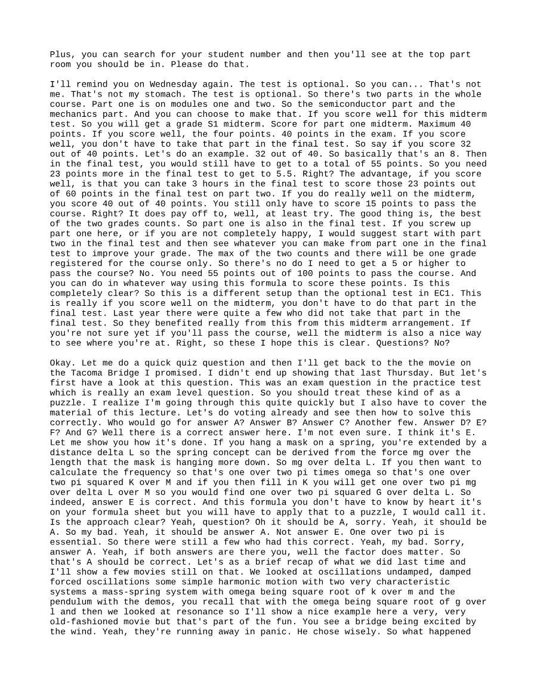
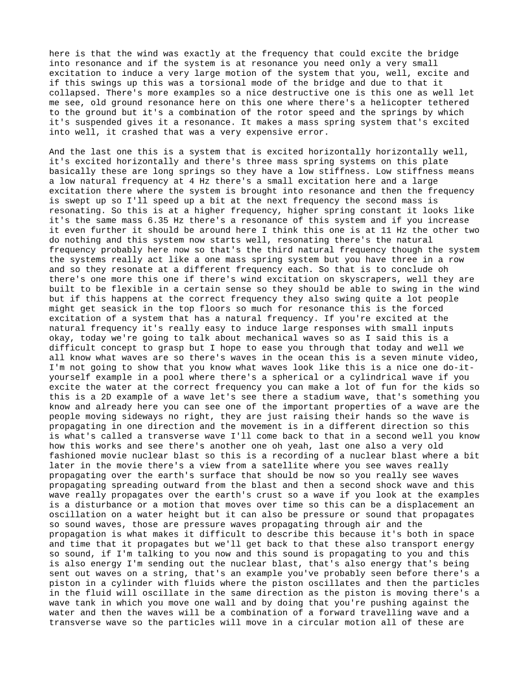
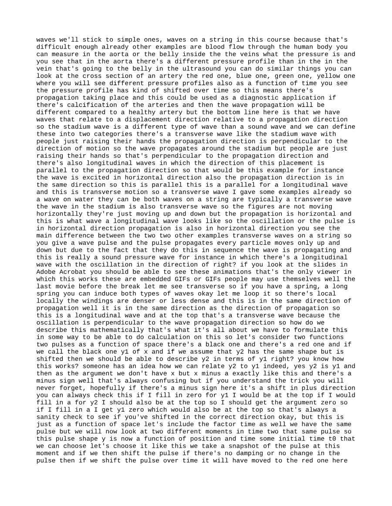
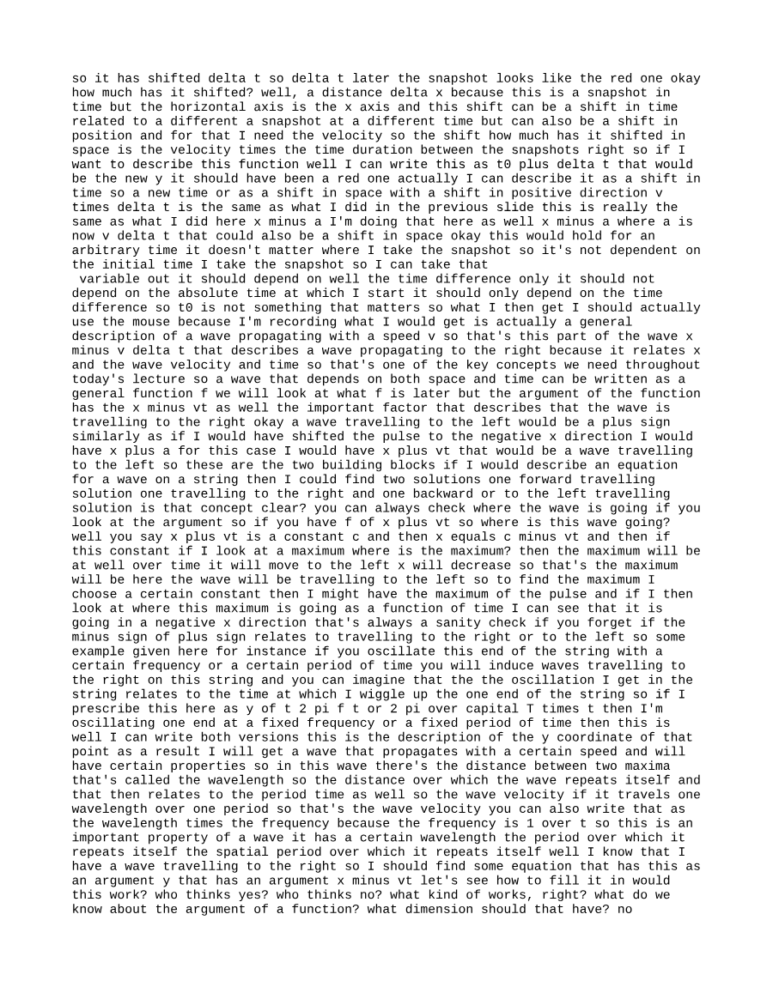
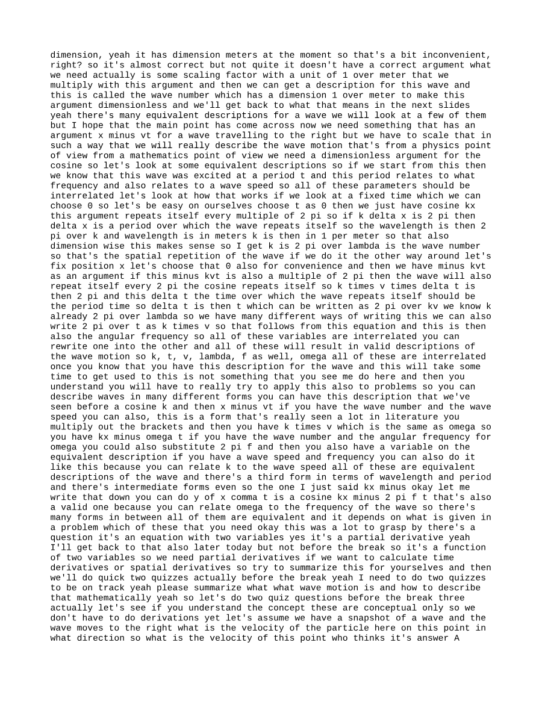
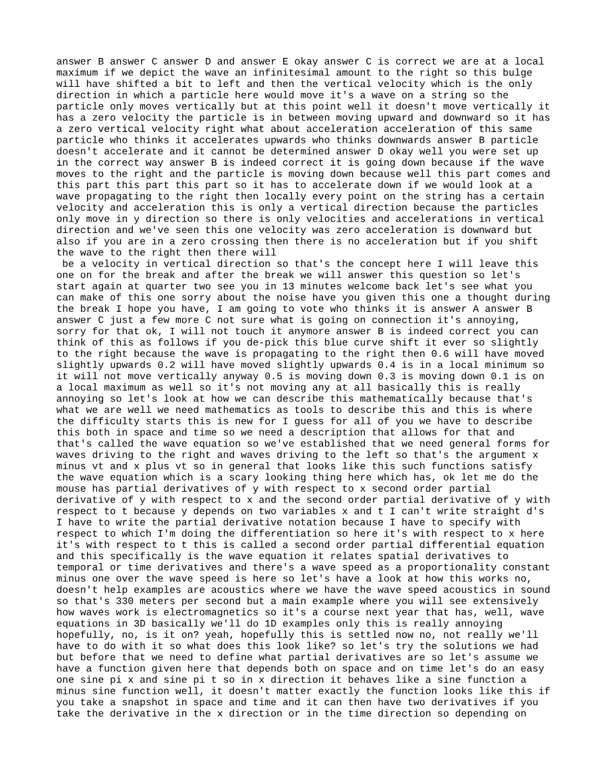
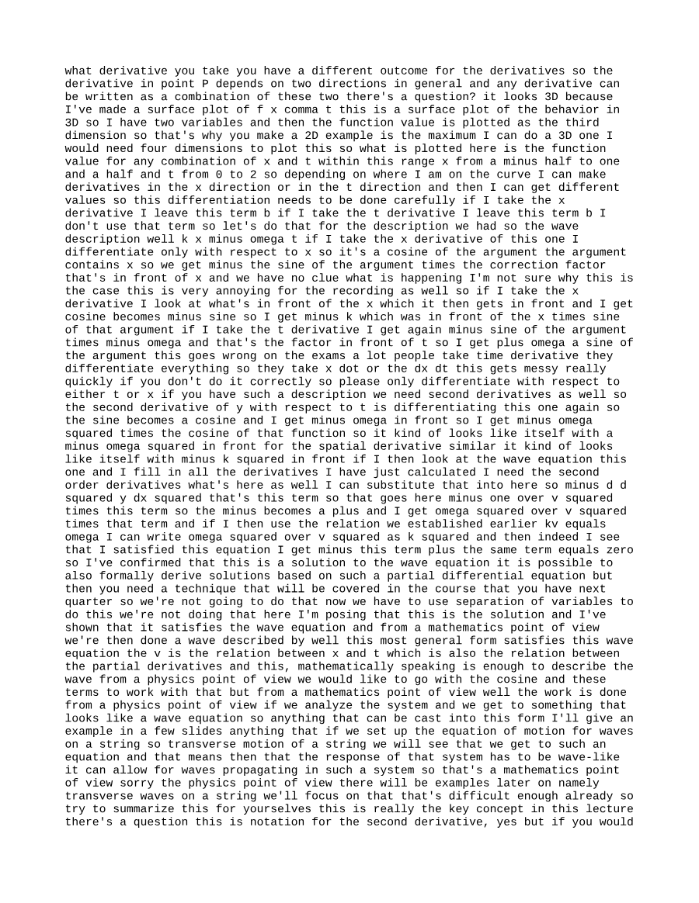
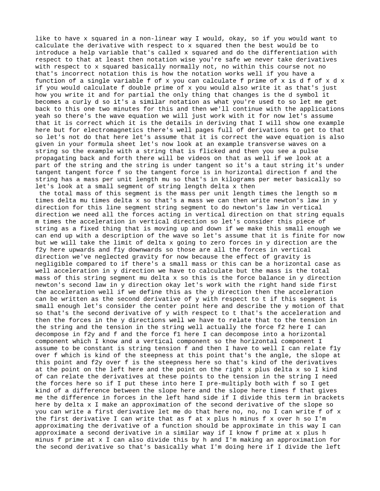
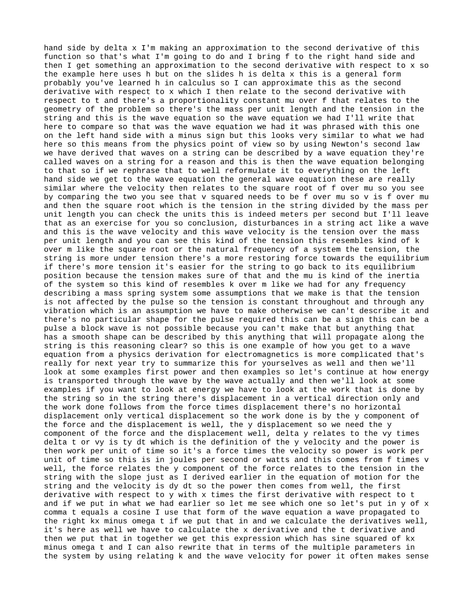
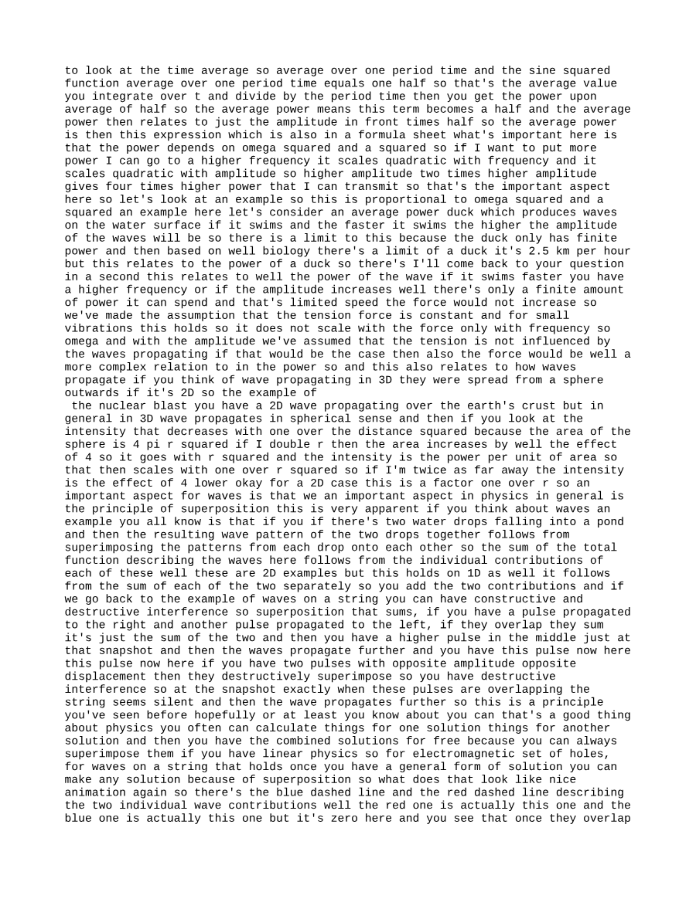
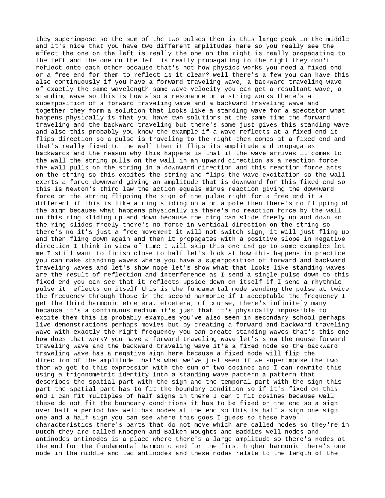
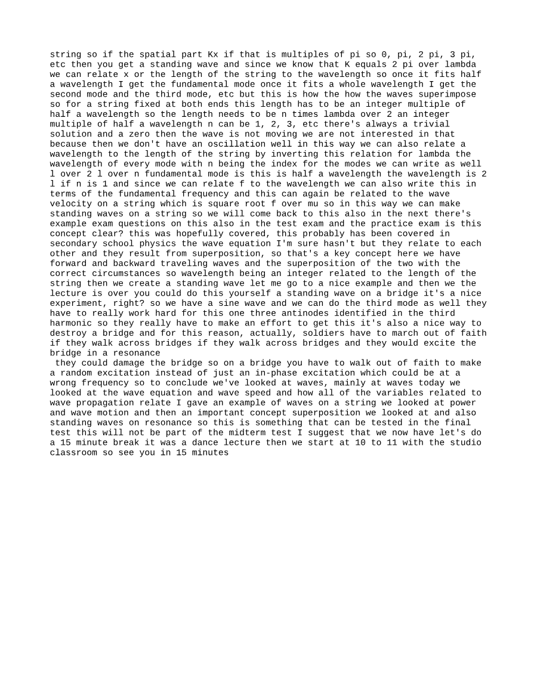